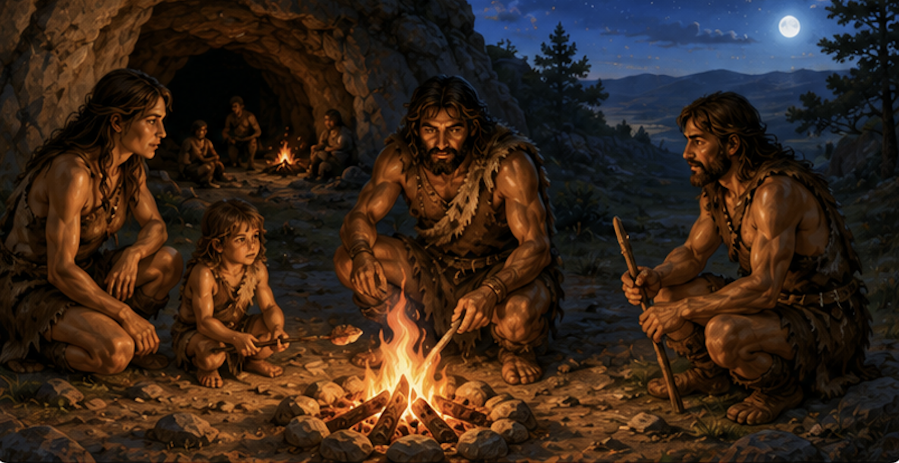
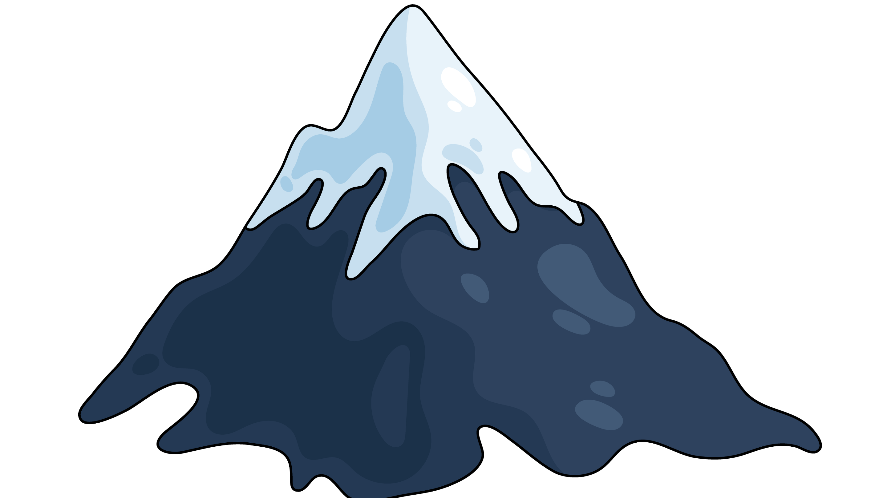
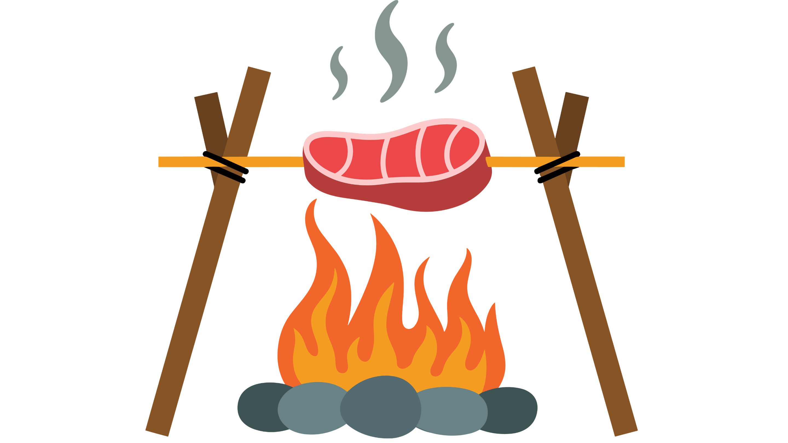
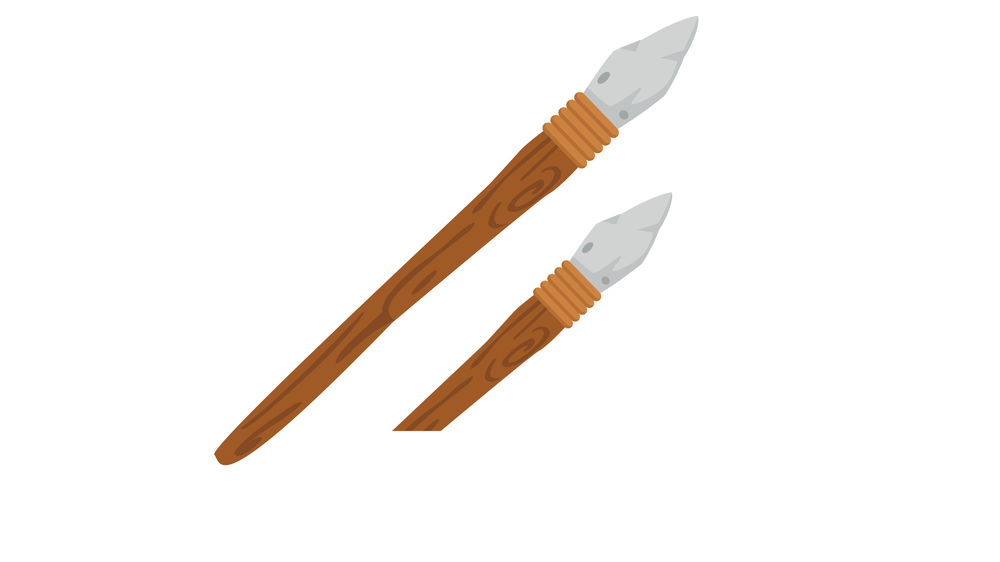
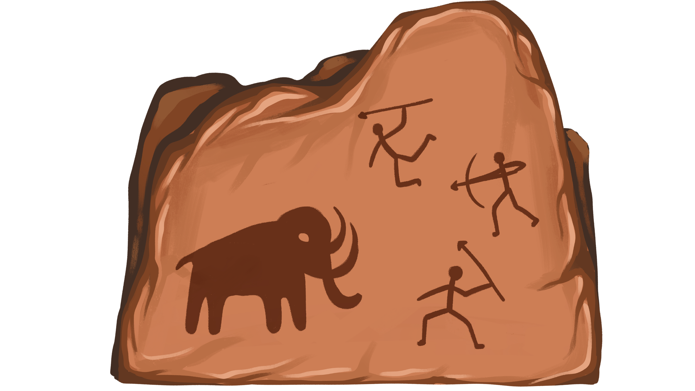

5. Ogień - wielkie odkrycie człowieka
⚜
Ogień był jednym z najważniejszych odkryć w dziejach ludzkości.
Zmienił życie naszych przodków i dał im wiele nowych możliwości.
Co zmieniło się dzięki ogniowi?

Można było przetrwać w zimnych miejscach.

Jedzenie dawało więcej sity.

Ogien pomagał w obróbce narzędzi i drewna.

Przy ogniu powstawały pierwsze opowieści i rysunki.

Sowa Historyk
Ogień dat ludziom bezpieczeństwo, ciepło i nowe umiejętności. Bez niego rozwój człowieka byłby o wiele wolniejszy.
➡ A jak myślisz, które z tych zmian było najważniejsze? Napisz swoją odpowiedź!